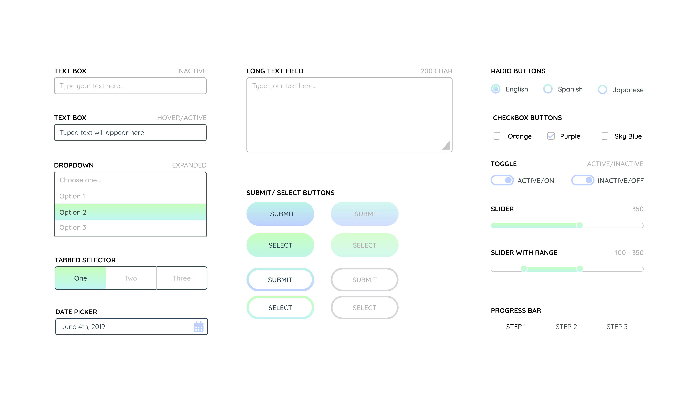

REFRESH (UI TOOLKIT)
PROJECT: UI Toolkit Design | DATE: November 2019 | Tools: Figma
After completing a few projects in Figma, I wanted to explore the features of the prototyping tool further. In addition, I wanted to have a go-to toolkit for quick prototyping. This toolkit is made with a minimalist and modern design that has UI elements that can be manipulated and combined to create quick and simple mockups.
UI Elements
This UI kit contains various elements for designers to pull from and use in various contextual instances. The goal of creating basic elements is to streamline the design process by giving designers the opportunity to pull from an existing library of commonly used elements, and also ensure that their final product is uniform and standardized. The color scheme of this UI kit is bright, while also maintaining simplicity - relying heavily on the use of neutral colors in addition to a few basic accents.

One main feature of this toolkit is that it provides samples of commonly used elements and CTAs. This makes the design process quick and simple, and also ensures that the final design follows a defined design standard. Below, you can see a compilation of pre-designed text fields and CTAs that a designer can use when creating quick mockups that need to be at a high fidelity.
Use In Context
Below are a few examples of how the UI elements in the toolkit above can be used in context. The versatility of the toolkit can be seen below, and as shown, it is very easy to use this toolkit in very different contextual instances.

UX CHALLENGES AND TAKEAWAYS
I really enjoyed developing this toolkit to add to my arsenal of design tools. I think having a baseline toolkit with UI elements can be a big time saver, and make designing more efficient. The colors and designs of this toolkit can easily be modified to fit the needs of different projects, so I am excited to have been able to create a tool that makes prototyping more quick and easy for me. Something I would like to iterate upon with this specific design is to update the colors and text to make them accessible to all users.